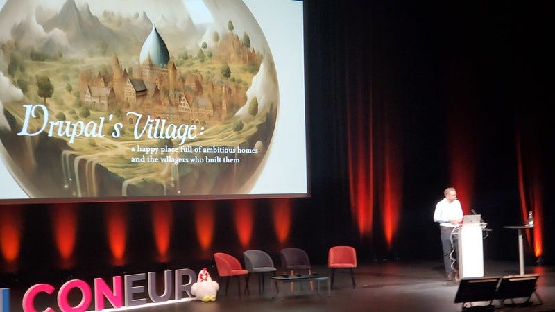
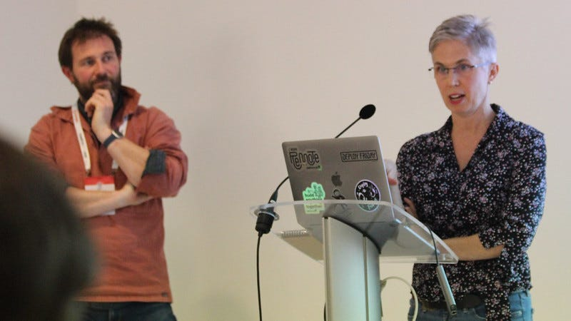
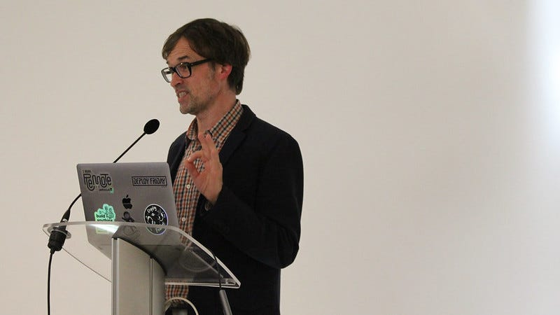
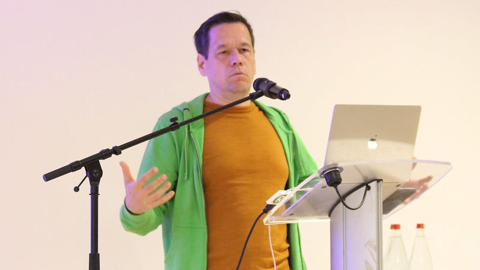
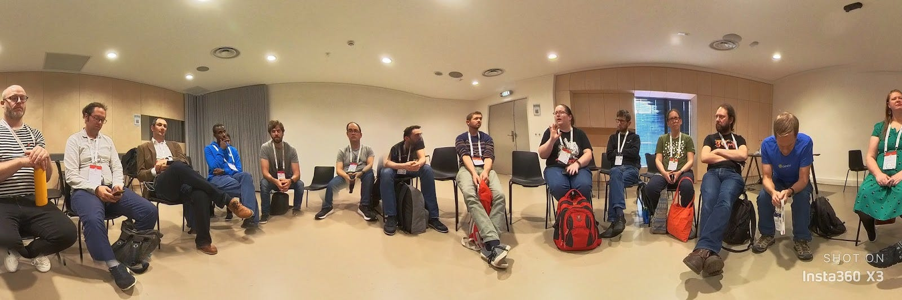

In October, I was excited to attend DrupalCon Lille. I was giving a talk on accessibility, but was also thrilled to attend three sustainability events at DrupalCon. There is a growing awareness in the Drupal community that we have a pivotal role to play with environmental responsibility. With Drupal delivering 2% of the web, we have a measurable impact on the climate. The code uses electricity both in big data centers and in our homes and offices. We aren’t sure what our total impact is, but we must begin by encouraging our community to dig into this issue and share what they have learned.

It is worth noting that Drupal has a Sustainability Statement and the DrupalCon event also put out a statement noting a commitment to a more sustainable conference this year. Drupal’s Sustainability Statement touches on the software we produce and how we produce it. Aside from our events, our community works a lot through the website, GitLab and tools like Zoom and Slack. DrupalCon Lille also did a terrific job of providing vegan food and reducing waste. Bringing in a third party to do a measurement of the event’s environmental footprint would be a great step.
Our joint sustainability journey
The first DrupalCon presentation was presented by Nestlé and Platform.sh and was entitled Our joint sustainability journey: reducing emissions and technical learnings. Platform.sh is the first Drupal hosting company which has an Environment Impact Officer (Leah Goldfarb). Leah was presenting with Andrew Melck (also from Platform.sh). It was fascinating to learn about their work getting a third party sustainability audit, and their work to properly account for the impact of their cloud infrastructure.


My takeaway from this is the importance of engaging a sustainability professional, certainly the first time. Platform.sh did this both by hiring a climate scientist to be part of their team, but also by engaging a third party consultant, which demonstrates terrific leadership.
Engaging Drupal in Greening our Code
Another notable presentation was by Janne Kalliola of Exove and author of the book Green Code. His presentation was on ICT Greenhouse Gas Emissions Are Exploding, How Drupal Community Should Engage and Contribute Their Part. Janne isn’t the first person to have written a book on software and the web, but is the first to do so from the perspective of a senior software developer, which allowed for many great insights from his experience.

My takeaway from this is that although there is a lot of debate about how to most effectively measure CO2 for software, the consensus is that reducing the execution time ultimately reduces the electricity required.
Sustainability Discussion on Reducing our Footprint
Finally, I led an organized, informal discussion in technical circles often called a “Birds of a Feather” (BoF) session. My BoF was titled Sustainability and Drupal — How can our community reduce our CO2 Footprint. I wanted to bring together different sectors of our community and foster a discussion. Drupal has a long tradition of hosting these gatherings. It was exciting to see the interest in this topic from the Drupal Association, several senior members of the Drupal community, as well as a couple French firms which have already started down this road. It was terrific to have Randy Fay of DDEV there too, as this is such a key leader for our communities actual local development work.

I was struck by the level of experience in the room. It was the last day with sessions, and at a point when everyone at DrupalCon is exhausted. Yet, we had an energetic conversation and I think everyone left the room optimistic about what we could do together as a community.
One of the points that came up in the discussion was simply how much of our CO2 as a community was just traveling to Drupal events. Especially if people are booking long flights to go to DrupalCon, this can add up quickly. We know that being together is important for building community, how do we balance this with also reducing our footprint on the planet?